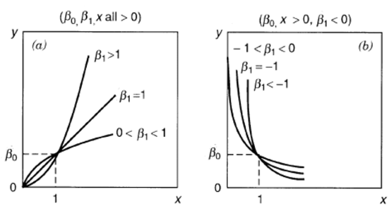
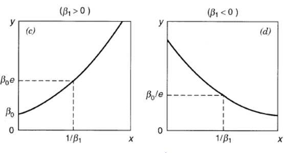
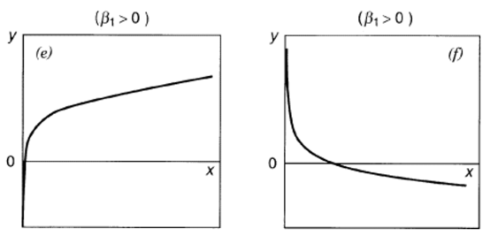
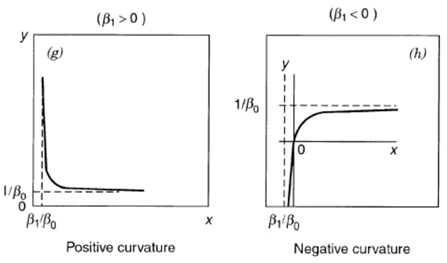

Transformation and Weighting to Correct Model Inadequacy
Overview
當基本假設被違反時，可以考慮對 response variable 進行變換。實務上的流程：
- 決定變換方式
- 配適變換後的模型
- 在變換後的尺度上檢查 residuals
Transformation
考慮對 response variable 進行變換 ，使得
注意事項：
- 檢查 的 normality 等性質
- 所有檢定和信賴區間必須在變換空間進行，即先預測 ，再轉換回
- 兩個模型的參數通常沒有數學等價關係
- 沒有正式的方法來尋找變換，需透過非正式的資料圖形來判斷
Variance-Stabilizing Transformation
問題識別
從 residual plots 可以確認 constant variance assumption。若假設被違反：
- LSE 的 standard errors 會較大（精度降低）
- 通常發生在 response 的變異數與平均數有函數關係時
何時 ？
- 從 vs. plots 觀察
- 可能依賴
- 例如： 時，
解決方法
尋找變換 使得
理論基礎（Delta Method）：
令 且
若 ，則
要使 ，需要
因此，尋找 使得
為何這樣的變換能穩定方差：Delta Method 觀點
令 ，即方差隨均值變化。希望找到函數 使 的方差為常數。若 ，對 在 處泰勒展開：
當 時，，且
要讓這個值等於常數 ，需要 。
Variance-Stabilizing Transformation
滿足 （ 為常數）的函數 稱為方差穩定轉換。
這與統計學中常見的 -method 是同一個想法：若 ，則 ，選 使 為常數即完成方差穩定化。
推導範例：
- ：，即 。
- ：。
- 。
- ：。
這些推導結果與下表一致，且說明了表中變換並非憑空選取，而是由「方差-均值關係」反推積分得出。變換未必保持原本的分佈形狀（例如可能讓數據看起來更接近常態），故若同時存在方差不等與非常態的問題，應優先處理方差不等。
常見變換
Common Variance-Stabilizing Transformations
給定 ，
與 的關係 適用範圍 變換 - (無需變換) (Poisson) (Binomial proportion) 或
Linearize the Model
目的
在 vs. plots 中若呈現曲率，或透過 lack-of-fit test 偵測到 nonlinearity，可使用可線性化函數（linearizable functions）。
常見可線性化模型
1. Power Model

令 ，，，得
2. Exponential Model

令 ，，得3. Logarithmic Model

令 ，得4. Reciprocal Model

令 ，，得重要提醒
Power Transformation: Box-Cox Method
動機
對於 ，若 相當大（長尾分佈），其中 和 分別是最小值和最大值，可考慮 power transformation 。
Power function 具有彈性：
- ：linear
- ：convex（凸函數）
- ：concave（凹函數）
Box-Cox Transformation
Box-Cox Transformation
\frac{y^\lambda - 1}{\lambda}, & \lambda \neq 0 \\ \log y, & \lambda = 0 \end{cases}$$ 此變換在 $\lambda$ 上連續且可微，即 $\lim_{\lambda \to 0} y^{(\lambda)} = y^{(0)}$
連續性證明：
Maximum Likelihood Estimation
考慮模型
則 的 joint pdf 為
因此
其中 Jacobian 為
y_i^{\lambda-1}, & \lambda \neq 0 \\ 1/y_i, & \lambda = 0 \end{cases} = y_i^{\lambda-1}$$ 因此 $$|J(\lambda)| = \prod_{i=1}^n y_i^{\lambda-1} = \left(\prod_{i=1}^n y_i\right)^{\lambda-1}$$ ### Log-Likelihood Function 基於原始 $y_1, \ldots, y_n$ 的 log-likelihood function： $$L_y(\beta, \sigma^2, \lambda) \propto -\frac{n}{2}\log\sigma^2 - \frac{1}{2\sigma^2}(y^{(\lambda)} - X\beta)'(y^{(\lambda)} - X\beta) + \log|J(\lambda)|$$ **Profile Likelihood Approach：** 對固定的 $\lambda$，最大化 $L_y$ 關於 $\beta, \sigma^2$，得 $$\hat{\beta} = (X'X)^{-1}X'y^{(\lambda)}$$ $$\hat{\sigma}^2 = \frac{(y^{(\lambda)} - X\hat{\beta})'(y^{(\lambda)} - X\hat{\beta})}{n}$$ 代入得 profile log-likelihood： $$L_y(\hat{\beta}, \hat{\sigma}^2, \lambda) = -\frac{n}{2}\log\left[\frac{1}{n}(y^{(\lambda)})'(I-H)y^{(\lambda)}\right] - \frac{n}{2} + \frac{n}{2}\log|J(\lambda)|^{2/n}$$ 簡化為 $$L_{max}(\lambda) = -\frac{n}{2}\log\left[\frac{v'(I-H)v}{n}\right] - \frac{n}{2}$$ 其中 $$v = \frac{y^{(\lambda)}}{|J(\lambda)|^{1/n}}$$ ### 計算程序 > [!theorem] Box-Cox MLE of $\lambda$ > > 最大化 $L_{max}(\lambda)$ 等價於最小化 > $$SS_{Res}(\lambda) = v'(I-H)v$$ > > 其中 > $$v = v(\lambda) = \begin{cases} > \frac{y^\lambda - 1}{\lambda \bar{y}_{\cdot}^{\lambda-1}}, & \lambda \neq 0 \\ > \bar{y}_{\cdot} \log y, & \lambda = 0 > \end{cases}$$ > > 這裡 $\bar{y}_{\cdot} = \left(\prod_{i=1}^n y_i\right)^{1/n}$ 是 geometric mean **實務步驟：** 1. 選擇 $\lambda \in (-2, 2)$ 2. 繪製 $SS_{Res}(\lambda)$ vs. $\lambda$ 3. 找出使 $SS_{Res}(\lambda)$ 最小的 $\hat{\lambda}$ ### Interval Estimation of $\lambda$ 對於大樣本， $$L_{max}(\hat{\lambda}) - L_{max}(\lambda) \xrightarrow{d} \frac{1}{2}\chi_1^2$$ 因此 $\lambda$ 的近似 $100(1-\alpha)$% 信賴區間為 $$\left\{\lambda : L_{max}(\lambda) \geq L_{max}(\hat{\lambda}) - \frac{1}{2}\chi_{1;\alpha}^2\right\}$$ **等價條件：** $$SS_{Res}(\lambda) \leq SS_{Res}(\hat{\lambda}) \cdot e^{\chi_{1;\alpha}^2/n} \equiv SS^*$$ 繪製 $SS_{Res}(\lambda)$ 與水平線 $SS^*$ 的交點即為信賴區間端點。 ### Transformations on Regressors 有時對一個或多個 regressor variables 進行變換也是有用的。 這些變換通常是**經驗性**選擇。 **Box-Tidwell Method** 可用於分析性地決定變換（參見課本 p.184）。 ## Generalized and Weighted Least Squares ### 問題設定 在 $y = X\beta + \varepsilon$ 中，若 $E(\varepsilon) = 0$ 但 $\text{Var}(\varepsilon) = \sigma^2 V$，其中 $V \neq I$？ ### 理論基礎：Cholesky Decomposition > [!theorem] Square Root of Matrix > > 若 $V$ 為 nonsingular, symmetric 且 positive definite，則存在 nonsingular, symmetric 矩陣 $K$ 使得 > $$V = K'K = KK$$ > > 矩陣 $K$ 稱為 $V$ 的 **square root**，可透過 Cholesky 分解 $V=LL^t$（$L$ 下三角）取 $K=L^t$ 構造出來。 ### Generalized Least Squares (GLSE) **模型變換：** $y = X\beta + \varepsilon$ 等價於 $$K^{-1}y = K^{-1}X\beta + K^{-1}\varepsilon$$ 令 $z = K^{-1}y$，$B = K^{-1}X$，$g = K^{-1}\varepsilon$，則 $$z = B\beta + g$$ 其中 - $E(g) = K^{-1}E(\varepsilon) = 0$ - $\text{Var}(g) = K^{-1}\text{Var}(\varepsilon)(K^{-1})' = \sigma^2 K^{-1}VK^{-1} = \sigma^2 K^{-1}(KK)K^{-1} = \sigma^2 I$ > [!definition] Generalized Least Squares Estimator (GLSE) > > $$\hat{\beta}_{GLSE} = (X'V^{-1}X)^{-1}X'V^{-1}y$$ > > 最小化 $S(\beta) = \sum_{i=1}^n g_i^2 = g'g = \varepsilon'V^{-1}\varepsilon$ ### Properties of GLSE 對於模型 $z = B\beta + g$（其中 $z = K^{-1}y$，$B = K^{-1}X$，$g = K^{-1}\varepsilon$）： 1. **Unbiasedness**: $E(\hat{\beta}) = \beta$ 2. **Variance**: $\text{Var}(\hat{\beta}) = \sigma^2(X'V^{-1}X)^{-1}$ 3. **Regression Sum of Squares**: $$SS_R(\beta) = \hat{\beta}'B'z = y'V^{-1}X(X'V^{-1}X)^{-1}X'V^{-1}y, \quad \text{df} = p$$ 4. **Residual Sum of Squares**: $$SS_{Res} = z'z - \hat{\beta}'B'z = y'V^{-1}y - y'V^{-1}X(X'V^{-1}X)^{-1}X'V^{-1}y, \quad \text{df} = n-p$$ 5. **Total Sum of Squares**: $$z'z = y'V^{-1}y, \quad \text{df} = n$$ --- ## Weighted Least Squares (WLSE) ### Special Case: Diagonal Variance Matrix > [!definition] Weighted Least Squares > > 當 $V = \text{diag}(1/w_i)$，即 $\varepsilon_i$ 互不相關但具有不等變異數時， > > 令 $W = V^{-1} = \text{diag}(w_i)$，則 > $$\hat{\beta}_{WLSE} = (X'WX)^{-1}X'Wy$$ > > 最小化加權平方和 > $$\sum_{i=1}^n w_i(y_i - \beta_0 - \beta_1 x_{1i} - \cdots - \beta_k x_{ki})^2$$ $\hat{\beta}_{WLSE}$ 也稱為 **Weighted Least Squares Estimator (WLSE)** ### 從標準化誤差項推導 WLSE **動機。** 上面直接給出 WLSE 的形式，這裡從「讓誤差項標準化」的角度重新推導，說明它為何等價於 GLSE 的特例。 設 $\sigma_i^2=\sigma^2c_i^2$，$c_i>0$ 已知，即只有一個未知數 $\sigma^2$。將原始模型兩邊除以 $c_i$：Y_i=\beta_0+\beta_1X_{i1}+\cdots+\beta_kX_{ik}+\varepsilon_i \iff\frac{Y_i}{c_i}=\frac{\beta_0+\beta_1X_{i1}+\cdots+\beta_kX_{ik}}{c_i}+\varepsilon_i
其中 $\varepsilon_i^*\triangleq\varepsilon_i/c_i\sim N(0,\sigma^2)$（變異數已標準化為常數）。要在此模型下找 $\beta$ 的 LSE，需最小化Q_W(\beta)\triangleq\sum_{i=1}^n\frac{1}{c_i^2}(Y_i-(\beta_0+\beta_1X_{i1}+\cdots+\beta_kX_{ik}))^2=(Y-X\beta)
其中 $W=\text{diag}\{1/c_1^2,\cdots,1/c_n^2\}=\text{diag}\{w_1,\cdots,w_n\}$——這就是加權平方和的由來。與一般 LSE 類似，$Q_W(\hat\beta_W)=\min_\beta Q_W(\beta)\iff\hat\beta_W$ 滿足 $X^tWY=X^tWX\hat\beta_W$，若 $(X^tWX)^{-1}$ 存在則 $\hat\beta_W=(X^tWX)^{-1}X^tWY$。 **與 GLSE 的關係**：令 $W^{1/2}=\text{diag}\{1/c_1,\cdots,1/c_n\}$，則Q_W(\beta)=(W^{1/2}Y-W^{1/2}X\beta)^t(W^{1/2}Y-W^{1/2}X\beta)=(Y^-X^\beta)^t(Y^-X^\beta)
其中 $Y^*=W^{1/2}Y,X^*=W^{1/2}X$，這就轉換成標準模型 $Y^*=X^*\beta+\varepsilon^*$（$\varepsilon^*\sim N(0,\sigma^2I)$），且 $X^*$ 滿秩 $\iff X$ 滿秩，恰為 [[#Generalized Least Squares (GLSE)|GLSE]] 在對角變異數下的特例。由 Gauss-Markov theorem，$\hat\beta_W$ 是 $\beta$ 的 BLUE；雖然用原始（未加權）模型得到的 $\hat\beta$ 仍是不偏估計，但方差比 $\hat\beta_W$ 大，因此不再是 BLUE。 在 $(X^*,Y^*)$ 模型下：\text{MSE}W\triangleq\frac{(Y^-X^\hat\beta_W)^t(Y^-X^\hat\beta_W)}{n-p}=\frac{e^tWe}{n-p}=\frac{1}{n-p}\sum{i=1}^n\frac{e_i^2}{c_i^2} \implies S^2{\hat\beta_W}=\text{MSE}_W(X^tWX)
即：若 $\varepsilon\sim N_n(0,\sigma^2\text{diag}(c_1^2,\cdots,c_n^2))$（$\sigma^2$ 未知但 $c_i$ 已知），應以 $\hat\beta_W$ 估計 $\beta$，並用 $\hat Y=X\hat\beta_W$、$e=Y-\hat Y$、$\text{MSE}_W$ 估計 $\sigma^2$。 ### 當 $\sigma_i^2$ 完全未知時的估計流程 若對 $\sigma_i^2$ 一無所知，需透過現有資料估計：(1) 對 $Y$ 做迴歸得殘差 $e$；(2) 用 $e_i$ 估計 $\sigma_i^2$；(3) 得到估計值 $S_i^2$ 後令 $w_i=1/S_i^2$，代入得到 WLSE。經驗上常見的估計方式： 1. 若 $e$ 與 $X_j$ 的散佈圖呈麥克風形狀，對 $Y^*=|e|$ 做 $X_j$ 的迴歸，$\hat Y_i^*=S_i$。![[mlse_1.png|300]] 2. 若 $e$ 與 $Y$ 的散佈圖呈麥克風形狀，對 $Y^*=|e|$ 做 $Y_i$ 的迴歸，$\hat Y_i^*=S_i$。![[mlse_2.png|300]] 3. 若 $e^2$ 與 $X_j$ 的散佈圖呈上揚趨勢，對 $Y^*=e^2$ 做 $X_j$ 的迴歸，$\hat Y_i^*=S_i^2$。![[mlse_3.png|300]] 4. 若 $e$ 與 $X_j$ 的變化率由大到小，對 $Y^*=|e|$ 做 $X_j+X_j^2$ 的迴歸，$\hat Y_i^*=S_i$。![[mlse_4.png|300]] ### 與 Hat Matrix 的關係 使用 [[Hat Matrix Properties]] 的概念，$SS_{Res}(\lambda) = v'(I-H)v$ 可寫為加權殘差平方和。 ### 重要注意事項 1. **權重必須已知**：$w_i$ 必須是已知的或從先驗知識獲得 2. **權重選擇**： - 有時 $w_i = 1/x_i$ - 或從 residual plots 發現 $\text{Var}(\varepsilon_i) \propto x_i$ 3. **OLSE vs. GLSE**： - [[lse|OLSE]]（ordinary LSE）= $(X'X)^{-1}X'y$ 仍是 unbiased - 但當 $V \neq I$ 時，OLSE **不再是 minimum variance estimator** $$\text{Var}(\hat{\beta}_{OLSE}) = (X'X)^{-1}X'\text{Var}(y)X(X'X)^{-1} = \sigma^2(X'X)^{-1}X'VX(X'X)^{-1}$$ $$\text{Var}(\hat{\beta}_{GLSE}) = \sigma^2(X'V^{-1}X)^{-1}$$ ### Variance Estimation **問題：** 一般而言，$V$ 是未知的，必須估計。有 $n(n+1)/2$ 個不同元素，基於 $n$ 個觀測值不可能可靠估計所有元素。 **解決方案：** 若存在涉及很少參數的已知關係，則估計程序變得可行。 ### Diagonal Case: MINQUE 對於 diagonal case，$V = \text{diag}(\sigma_i^2)$，估計量 $\hat{\sigma}^{(2)} = (\hat{\sigma}_1^2, \ldots, \hat{\sigma}_n^2)'$ 滿足 $$e^{(2)} = \begin{bmatrix} e_1^2 \\ \vdots \\ e_n^2 \end{bmatrix} = M^{(2)} \hat{\sigma}^{(2)}$$ 其中 $M^{(2)} = (m_{ij}^2)$，而 $I - H = (m_{ij})$ **推導：** 由於 $e = (I-H)\varepsilon$，$e_i = \sum_{j=1}^n m_{ij}\varepsilon_j$，因此 $$e_i^2 = \sum_{j=1}^n \sum_{l=1}^n m_{ij}m_{il}\varepsilon_j\varepsilon_l$$ $$E(e_i^2) = \sum_{j=1}^n m_{ij}^2 E(\varepsilon_j^2), \quad i=1,\ldots,n$$ **MINQUE (Minimum Norm Quadratic Unbiased Estimator)：** 用 $e_i^2$ 替換 $E(e_i^2)$ 來估計 $\sigma_i^2$ **主要問題：** $\hat{\sigma}_i^2$ 可能為負值 ## Summary ### 何時使用各種方法 | 問題 | 方法 | 目的 | | ------------------------------------------------- | ----------------------------------- | ------------------------- | | $\text{Var}(y)$ 依賴 $E(y)$ | Variance-Stabilizing Transformation | 穩定變異數 | | 非線性關係 | Linearization | 線性化模型 | | $y > 0$ 且長尾 | Box-Cox Transformation | 找出最佳 power transformation | | $\text{Var}(\varepsilon) = \sigma^2 V$，$V \neq I$ | GLSE | 處理不等變異數或相關性 | | Diagonal $V$（不等變異數但獨立） | WLSE | 加權最小平方 |